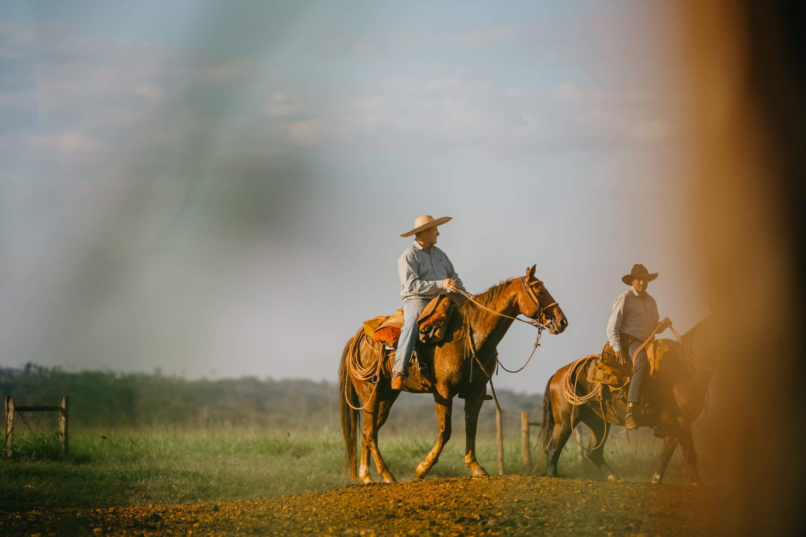
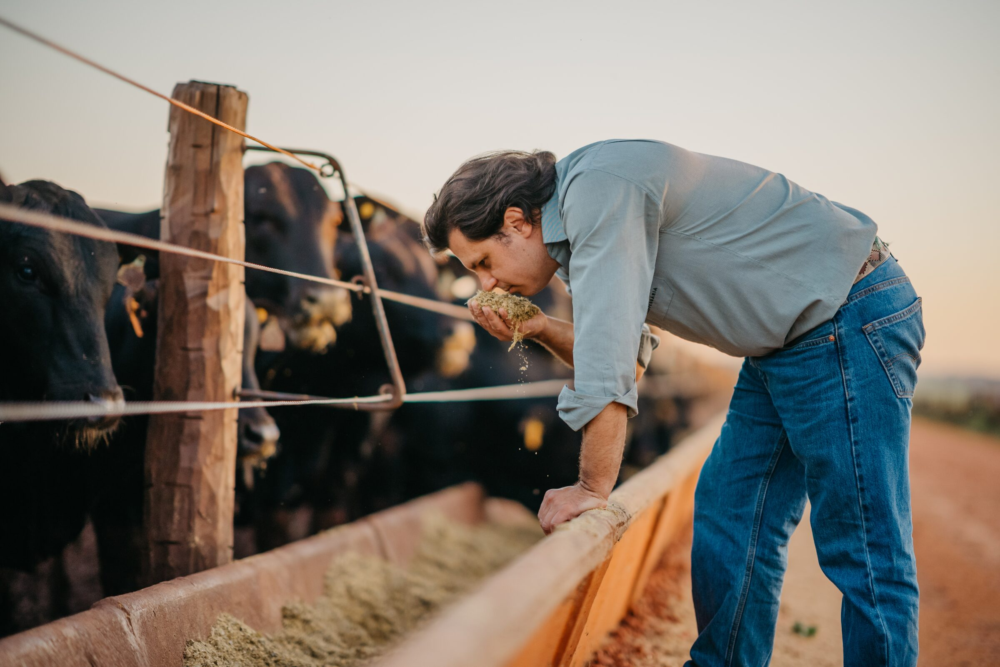
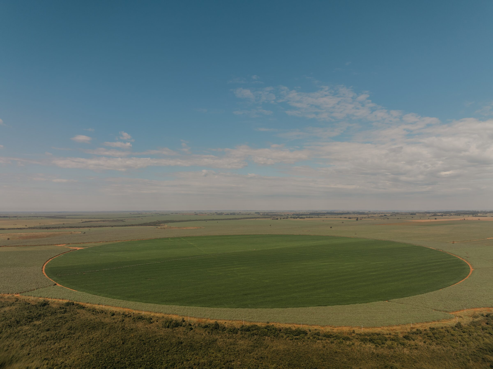
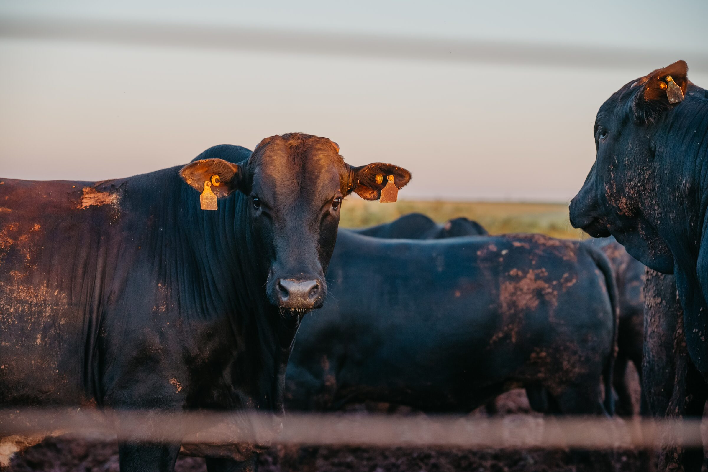
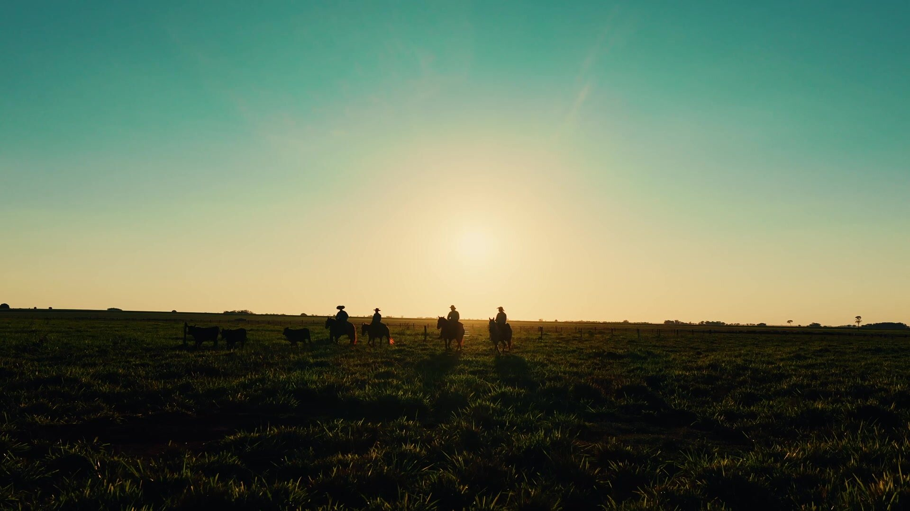
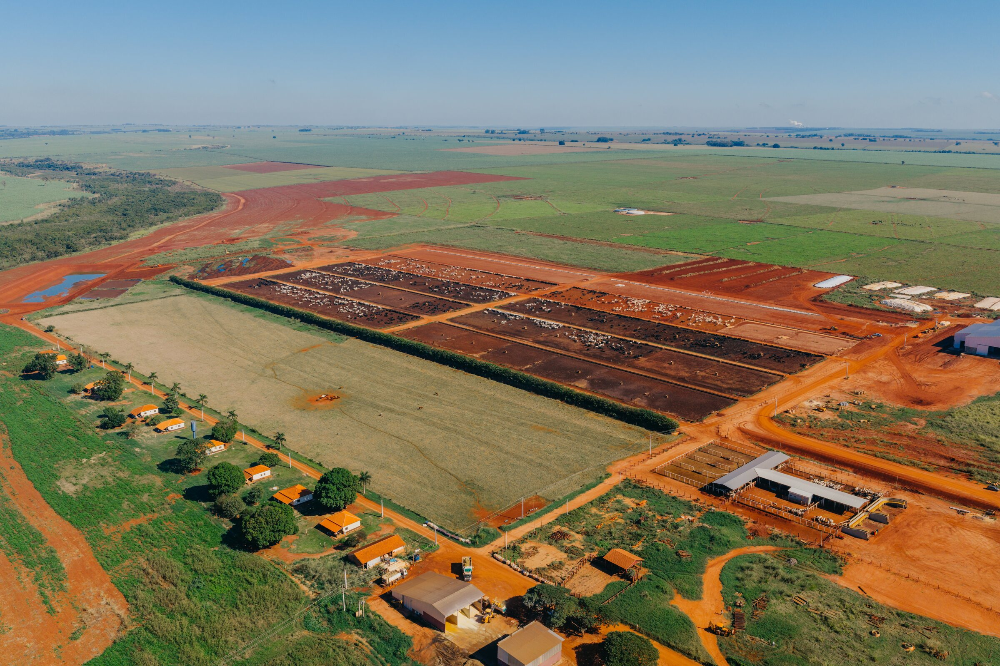
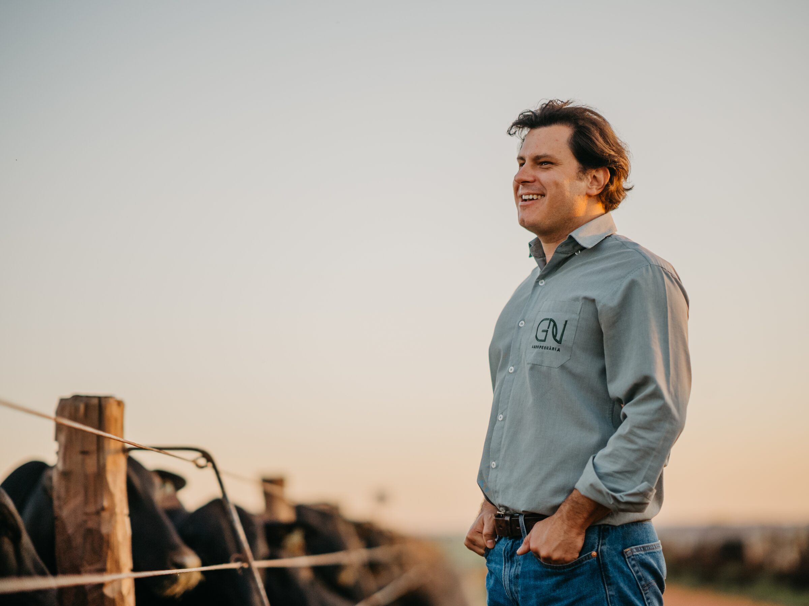

A base da GN foi consolidada na década de 60, quando piquetes de menor escala romperam com o manejo convencional da época. Hoje, a atividade agrícola de alta precisão e a engorda intensiva operam em total sinergia.

O que nasceu no ecossistema frigorífico em 1950 expandiu-se para um modelo produtivo verticalizado. Cruzamos gerações refinando processos, com os pés fincados na experiência e os olhos voltados à eficiência operacional e sustentabilidade no campo.
Duas unidades produtoras sustentam a operação hoje: a Fazenda Cerejo, em Angélica/MS, e a Fazenda Santana, no Paraguai, unindo manejo tradicional e automação de ponta.
Boitel, agricultura e tecnologia operando em sinergia para blindar a rentabilidade do produtor parceiro.

Dietas rigorosamente balanceadas e infraestrutura automatizada entregam carcaças padronizadas, otimizando o fluxo de caixa do parceiro e garantindo as melhores bonificações em escala industrial.

Lavouras de cana-de-açúcar e grãos conduzidas com telemetria embarcada e tratores com GPS, abastecendo com controle total a demanda nutricional do confinamento.

Softwares de monitoramento de pasto, automação de cocho e ERP de custos. Cada decisão é respaldada por métricas reais, maximizando o ganho médio diário.

Cenas do dia a dia na Fazenda Cerejo, do amanhecer no curral ao pôr do sol no pasto.
Showreel · Fazenda Cerejo, 2026Há mais de meio século, aprendemos que a pecuária de resultados não se sustenta com soluções superficiais. Ela exige consistência, profundidade técnica e o respeito ao tempo que cada processo demanda.
Nascemos dentro da cadeia produtiva da carne, entendemos a engrenagem que a move e traduzimos essa bagagem em terra trabalhada e eficiência de cocho.
Não seguimos o mercado de forma passiva; preferimos ditar o ritmo combinando o conhecimento acumulado no pasto e a precisão dos dados automatizados.
Nosso boitel não é apenas um espaço de engorda, mas o ponto de convergência onde a agricultura inteligente e o manejo zootécnico se encontram para blindar a rentabilidade do produtor.
Buscamos o sentido em cada hectare cultivado e o propósito em cada lote embarcado.
Conectamos saberes, otimizamos recursos e mantemos compromisso firme com a verdade da terra.
Avançamos com consciência para entregar valor real a quem planta o presente e alimenta o amanhã.
Mais de meio século de compromisso rigoroso com a verdade da terra e a entrega de resultados.
Estreito relacionamento com plantas frigoríficas parceiras, viabilizando mercados exigentes e bonificações de escala.
Nutrição de precisão e controle de ambiente que reduzem o custo por arroba e encurtam o ciclo pecuário.
Estruturados para atender de forma justa à realidade de cada produtor parceiro.
| Condição / Detalhe | Modalidade KG/MS | Parceria Padrão |
|---|---|---|
| Lote Mínimo | 100 animais | 60 animais |
| Noventena | Animais em noventena não serão aceitos | Animais em noventena não serão aceitos |
| Vistoria | Conforme avaliação técnica padrão | Realizada pela equipe da Fazenda Cerejo |
| Frete | Descontado após o abate (sem desembolso do parceiro) | Por conta do confinamento |
| Pesagem | Balança rodoviária do confinamento | Na balança do parceiro (até 150 km) ou na balança do boitel (acima de 150 km) |
| Tempo de Permanência | Mínimo 95 dias / Máximo 120 dias | Mínimo 95 dias / Máximo 120 dias |
| Protocolo Sanitário | R$ 25,00 por animal (descontado após o abate) | Por conta do confinamento |
| Responsabilidade por Mortes | Mortes sob gestão do confinamento pagas com base no peso médio de entrada e 50% de rendimento de carcaça. Sem cobertura para mortes naturais. | Conforme termos do contrato padrão de parceria agropecuária GN |
| Abate e Canal de Venda | Plantas frigoríficas parceiras do confinamento | Plantas frigoríficas parceiras do confinamento |
| Prazo de Pagamento | 30 dias após o abate | 30 dias após o abate |

Os resíduos orgânicos gerados em nosso confinamento passam por compostagem no pátio técnico e retornam às lavouras de cana e grãos como fertilizante orgânico de alto valor biológico.
Esse ciclo fechado confere viabilidade econômica e atende com absoluto rigor técnico às exigências socioambientais.
Still e aéreo do dia a dia da fazenda, do curral ao pasto.

Fale com a nossa equipe e conheça as condições de parceria.